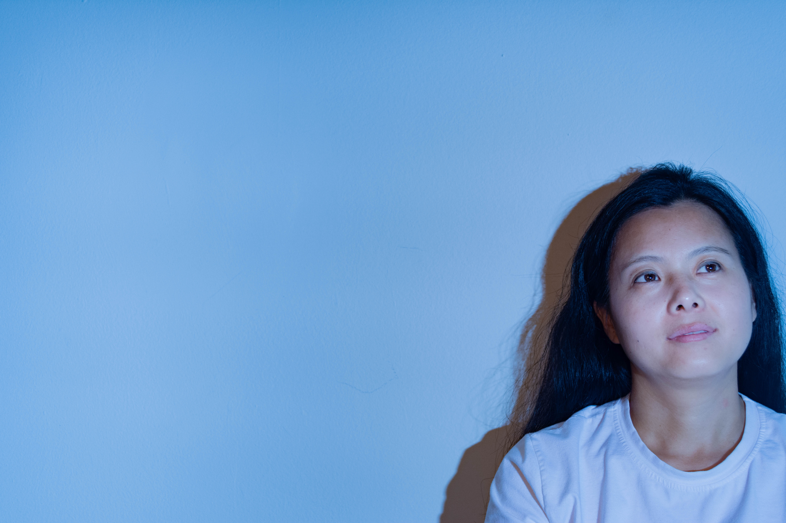
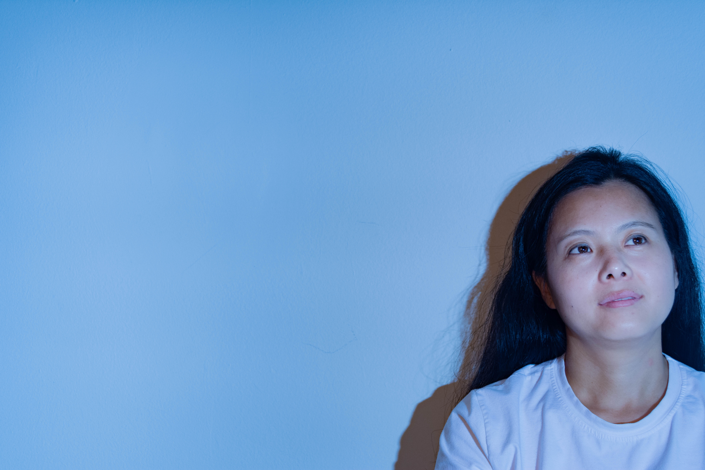

I am a junior student from University of Miami. I am an accounting major, but I love Photograph. The camera records my life and my thoughts. Photograph is a way to express myself and help me to communicate with the world. I am only a beginner now, but I always dream about to become a professional photographer.
PHOTOGRAPH
ABOUT
Love

Family is the most important thing in the world for me. I live with my grandparents when I was litte. It was a suprise that my grandparents took 15 hours flight to Miami to celebrate Chinese New Year with me. Chinese New Year is a festival all the families get together like Christmas. I have not celebrated with my families for 3 years. I always remember the smile on my grandma's face when I asked her to be my model. My grandpa is taciturn. He posed very seriously as I said without a word, like a child.
Muse
 


My mother is my first model. And she is my first teacher after I came to this world.
CITY


LIGHT

LIFE


Role Model
Felicia Simion

Felicia Simion is a young talented visual artist and freelance photographer from Romania. She decided to become a photographer when she was 13 years old.She describes it as a sudden burst of joy. Feliciahas passion about artistic expression. She loves drawing, dancing, playing guitar and writing poem. Photograph helps her to find another side of her personality. I asked her a question: Will other people’s aesthetic will affect how you see the world?Her answer impressed me. She said if we keep an eye open and follow our own vision, the changes of getting lost become smaller. The meaning of communication with her is not only the techniques of photograph, but her spiritual world. I like photography because I want to use the photo as a tool to tell people my thoughts and how I see the world, which is Felicia doing.Knowing one’s spiritual world is more interests than watching a movie.
Chrissie White
Chrissie White is an American Photographer living in Seattle, Washington. She is inspired by the different modes in which we interpret reality and will sometimes make herself lucid dream when she needs fresh ideas. Her love of bold color, uncanny circumstances, and the remote wilderness, translates into visions of a surreal and vibrant world.